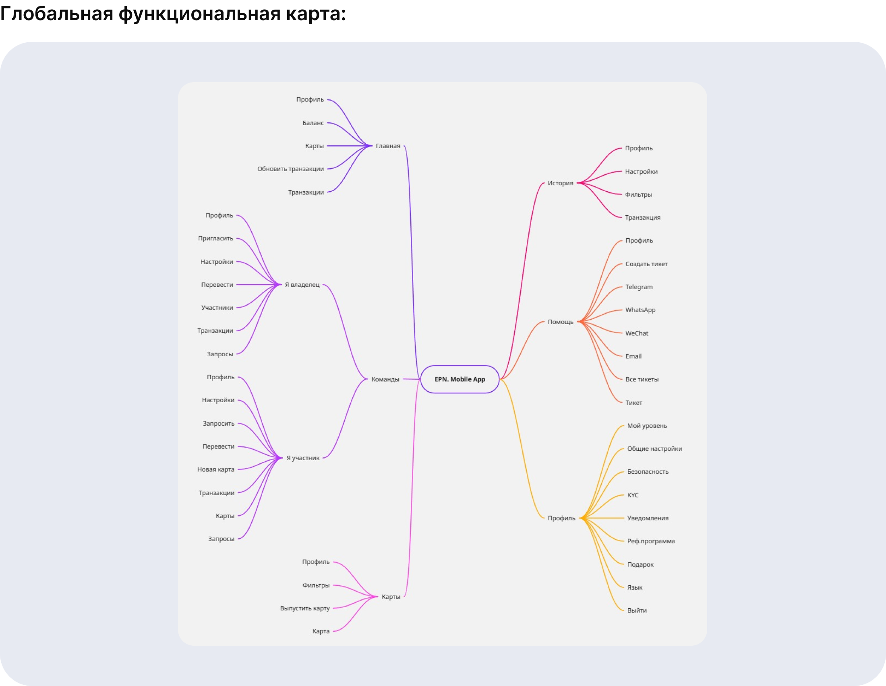
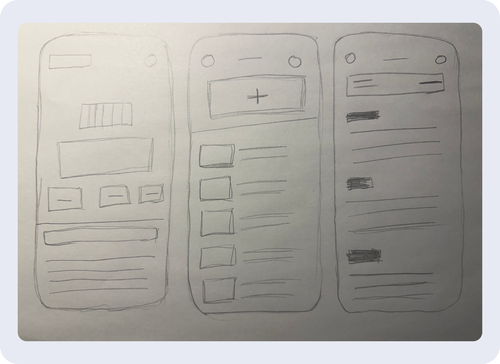
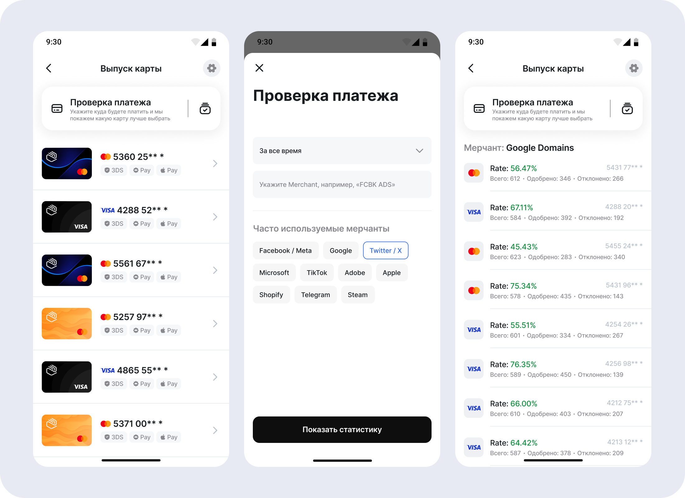
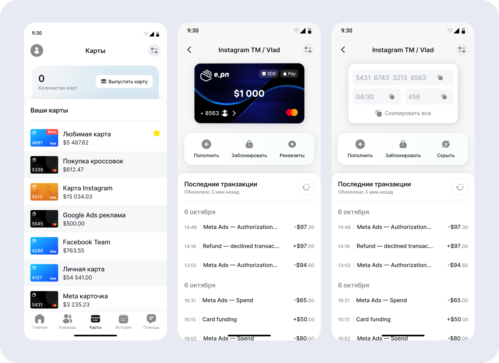
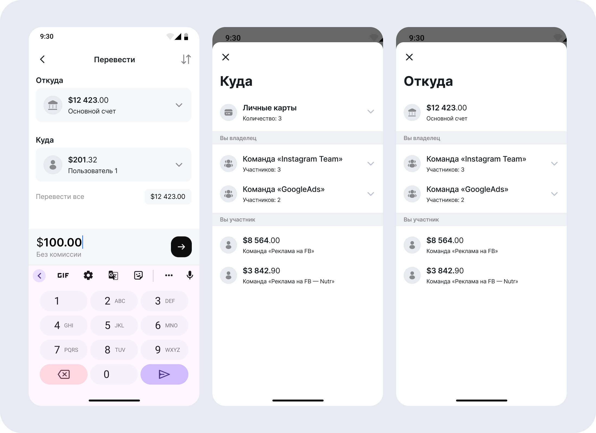
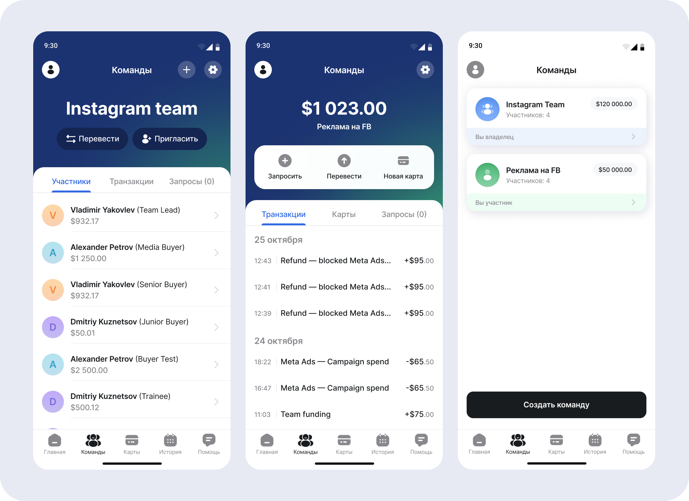
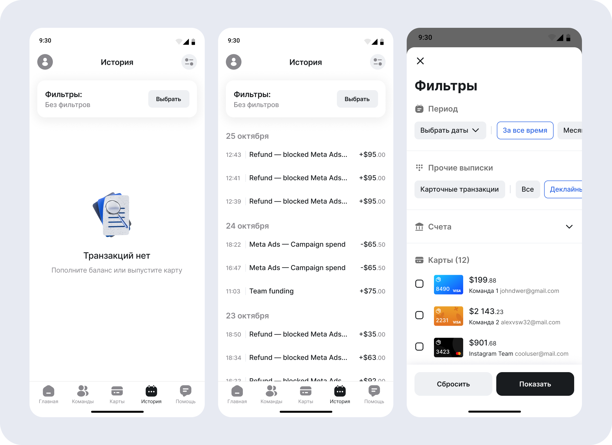
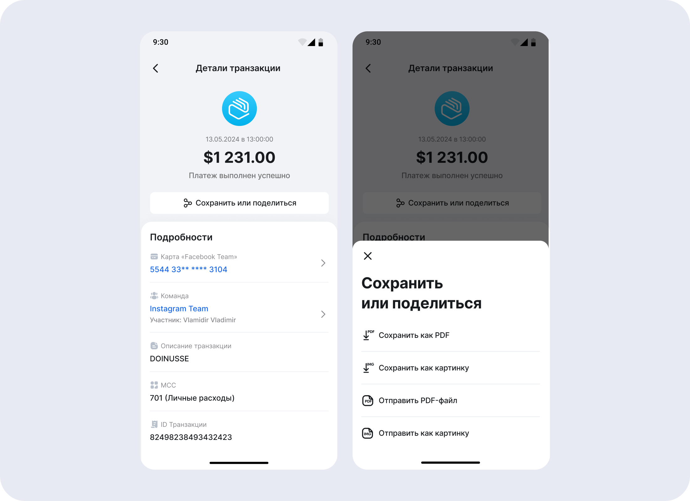

EPN Mobile App — мобильное приложение для управления виртуальными
картами и командными счетами, спроектированное с нуля как mobile-first
продукт. Цель приложения дать пользователю быстрый и надежный инструмент
управления финансами «на ходу», без необходимости постоянного обращения
к web-версии.
Приложение проектировалось в первую очередь для:
1Молодой digital-аудитории
2
Пользователей, привыкших управлять рекламой и платежами со смартфона
3
Ситуаций, где важны скорость реакции и минимум действий
Ключевая идея: если в web пользователь анализирует, то в mobile действует.
2. Моя роль и команда
Моя роль: UX/UI / Product Designer
Формат работы: Продуктовая команда
Взаимодействие:
1
Владелец продукта — формирование и приоритизация ключевых сценариев
2Аналитики — гипотезы, поведенческие паттерны
3
QA — проверка edge-case сценариев и тестирование критических состояний
4Разработка — мобильная команда (iOS / Android)
5Дизайн — я отвечал за UX/UI и дизайн продукта
3. Цели проекта
Бизнес-цели:
1Снизить порог входа для новых пользователей
2Увеличить частоту использования сервиса
3Сократить время реакции на проблемы с платежами
4Упростить командную работу с телефона
Пользовательские цели:
1Быстро выпустить или перевыпустить карту
2Мгновенно оплатить сервис или рекламу
3Контролировать баланс и транзакции
4Проверить проблему с платежом за 1–2 клика
4. Исследования и аналитика
Пользовательский контекст и наблюдения:
Мобильное приложение EPN разрабатывалось как основной инструмент для
оперативного управления, ориентированный на более молодую и мобильную
аудиторию, для которой телефон это основной рабочий интерфейс.
Исследования и продуктовые инсайты формировались на основе:
1
Анализа поведения пользователей веб-версии, активно использующих
сервис с мобильных устройств
2Обратной связи от команд и байеров
3
Сценариев «быстрого входа» в продукт: проверка баланса, платежей,
статуса карт
4
Наблюдений за использованием продукта в условиях высокой спешки и
стресса
В ходе анализа были выявлены ключевые пользовательские барьеры:
1Недостаточная скорость выполнения ключевых действий
2Перегруженность интерфейсов при мобильном использовании
3Отсутствие четкого контекста внутри команд
4Недостаточная детализация транзакций в мобильном формате
Анализ мобильных паттернов и конкурентов:
Дополнительно были изучены мобильные финтех-приложения и сервисы управления
платежами, в том числе банковские и neobank-решения.
Анализ проводился по следующим критериям:
1Скорость доступа к ключевым действиям
2Читаемость и иерархия данных на маленьком экране
3Работа с командами и счетами
4Паттерны управления картами и платежами
Ключевые проблемы, выявленные у большинства решений:
1Десктопная логика, перенесенная в мобильный формат
2Скрытые ключевые действия
3Недостаток визуальных ориентиров
4Слабая поддержка командных сценариев в мобильном интерфейсе
Выводы аналитического этапа:
1Mobile-first UX с приоритетом скорости и ясности
2Минимизация количества экранов в критических сценариях
3
Акцент на однозначные визуальные состояния (баланс, статус, decline)
4Быстрый доступ к управлению картами и командами
5
Детализированные транзакции без перегрузки интерфейса
5. Аудитория и поведенческий контекст
Основная аудитория:
1Media buyers / performance-маркетологи
2Арбитражники трафика
3Владельцы команд
4Digital-предприниматели
Контекст использования:
1Частые короткие сессии (1–3 минуты)
2Использование «на бегу»
3Высокая цена ошибки
4Минимум времени на анализ
Персоны UX-артефакт:
Performance / Media Buyer
Цель: запускать и поддерживать рекламные кампании с телефона
Контекст: работает в движении, часто вне рабочего места
Боли:
Нет времени разбираться в сложных интерфейсах
Важно мгновенно понять, прошел ли платеж
Стресс при decline и блокировках
Ключевые сценарии:
Быстрый выпуск / перевыпуск карты
Проверка баланса и статуса карты
Оплата и контроль операций «на ходу»
Team Lead / Agency Owner
Цель: контролировать команды и бюджеты в реальном времени
Контекст: управляет несколькими командами и десятками карт
Боли:
Нет быстрого обзора по командам
Сложно понять, кто и куда тратит бюджет
Недостаточная детализация операций
Ключевые сценарии:
Обзор команд и балансов
Контроль транзакций участников
Контроль транзакций участников
6. UX-архитектура mobile-продукта
В отличие от web-версии, mobile-архитектура строилась не от разделов, а от действий.
Глобальная функциональная карта:

Low-fi Wireframes:

7. Ключевые сценарии и решения
Сценарий 1. Выпуск карты
Задача:
Спроектировать сценарий выпуска виртуальной карты с нуля так, чтобы
пользователь мог выпустить карту с мобильного устройства быстро,
безопасно и без лишних решений.
Контекст:
Мобильное приложение изначально создавалось как основной инструмент
для молодой digital-аудитории, привыкшей управлять сервисами со
смартфона.
Проблема:
1Высокая когнитивная нагрузка при выпуске карты в финтех-сервисах
2Ограниченный экран усложняет восприятие условий, комиссий и параметров
3Избыточные настройки увеличивают риск ошибки
4Потеря контекста между экранами замедляет сценарий
Гипотезы:
1Линейный сценарий без ветвлений снизит количество ошибок при выпуске карты
2Дефолтные параметры и автозаполнение позволят выпускать карту без глубокого погружения в настройки
3Отображение условий и комиссий в рамках одного сценария повысит доверие к операции
4Размещение ключевых действий в зоне большого пальца ускорит завершение сценария на мобильных устройствах
Решение:
1Спроектирован линейный пользовательский flow без возвратов и тупиковых состояний
2Минимизировано количество обязательных полей — только критичные для выпуска
3Условия, комиссии и итоговая сумма отображаются непосредственно в процессе выпуска
4Инструмент проверки платежа встроен в сценарий и помогает подобрать подходящую карту
5Основная CTA всегда находится в зоне комфортного взаимодействия большим пальцем

Результат:
1Сценарий выпуска карты изначально спроектирован как быстрый и предсказуемый
2Пользователи могут выпускать карты без обращения в поддержку
3Mobile-приложение стало основным инструментом для срочных операций
4Частота использования сценария выпуска карт с мобильных устройств выросла
Сценарий 2. Управление картой
Задача:
Обеспечить максимально быстрый доступ к карте и ключевым действиям,
чтобы пользователь мог совершать операции сразу, без лишней навигации
и поиска.
Контекст:
Мобильное приложение используется в активной операционной среде:
платежи, блокировки, пополнения и проверки происходят на ходу, часто
в условиях ограниченного времени и внимания.
Пользователь заходит в приложение с конкретной целью — выполнить
действие, а не изучать интерфейс или аналитику
Проблема:
1
В классических финтех-приложениях карта «теряется» среди
интерфейсных элементов
2Доступ к реквизитам требует нескольких переходов
3
Ключевые действия (пополнение, блокировка) спрятаны глубоко в
иерархии
4
История операций отделена от карты, теряется контекст
Гипотезы:
1Карта должна быть центром экрана, а не элементом списка
2
Пользователь мыслит действиями, а не данными. CTA важнее вторичной
информации
3
Визуальный фокус и минимальное количество элементов ускоряют
принятие решений
4
История операций должна быть доступна в контексте конкретной карты
Решение:
1
Карта вынесена в центральную зону экрана как основной объект
взаимодействия
2Основные действия размещены в зоне быстрого доступа
3
Реквизиты карты открываются в один шаг, с возможностью быстрого
копирования
4Последние транзакции отображаются сразу под картой
5
Интерфейс спроектирован под управление одной рукой (thumb-zone)

Результат:
1Сокращено время доступа к ключевым действиям с картой
2Снижено количество лишних переходов внутри сценария
3
Повышено доверие пользователей к управлению финансами с мобильного устройства
4
Увеличилась частота использования мобильного приложения для операционных задач
Сценарий 3. Перевод пользователю
Задача:
Спроектировать мобильный сценарий перевода средств, который изначально
минимизирует ошибки, понятен в моменте и подходит для регулярного
использования в командах.
Контекст:
Переводы используются регулярно: перераспределение бюджета между
командами, выдача средств баеру.
Проблема:
1Сложно понять, откуда и куда переводятся деньги
2Высокий риск ошибки при выборе получателя или суммы
3Перегруженные формы замедляют сценарий и повышают тревожность
Гипотезы:
1
Сценарий перевода должен быть линейным и пошаговым, без ветвлений
2
Контекст «Откуда» и «Куда» должен быть визуально и логически
разделен
3
Роль пользователя (владелец / участник) должна считываться мгновенно
Решение:
1Пошаговая модель перевода
2Контекстная группировка получателей
3Визуальные маркеры ролей
4Минимум действий
5Прозрачность условий

Результат:
1
Сценарий перевода изначально спроектирован как безошибочный и предсказуемый
2Логика перевода понятна без обучения и подсказок
3
Управление средствами с телефона не требует десктопа даже для командных операций
Сценарий 4. Управление командой
Задача:
Обеспечить быстрый и безопасный контроль командных расходов и
участников с мобильного устройства без перегрузки интерфейса и
потери управляемости.
Контекст:
Владелец команды или тимлид регулярно проверяет состояние команды
«на ходу»: между встречами, запусками или в момент проблем с
платежами. Основной сценарий — быстро понять, все ли под контролем,
а не погружаться в детали.
Проблема:
1
Классические таблицы и списки плохо масштабируются под
mobile-формат
2
Трудно за несколько секунд понять: сколько денег у команды и
где возможные риски
3
Управление доступами и действиями часто требует лишних переходов
Гипотезы:
1
Для мобильного контекста агрегация важнее детализации
2
Роль пользователя (владелец / участник) должна считываться
мгновенно
3
Ключевые действия должны быть доступны сразу, без погружения в
иерархию экранов
Решение:
1Карточки команд как основной паттерн
2Фокус на агрегированные показатели
3Ролевая логика на уровне интерфейса
4Быстрые действия на первом экране
5
Детализация участников, транзакций и запросов — только при
необходимости

Результат:
1
Управление командами стало возможным и эффективным с мобильного
устройства
2
Сократилось время на оценку состояния команды и принятие решений
3
Повысилась прозрачность командных финансов без усложнения
интерфейса
Сценарий 5. История транзакций
Задача:
Дать пользователю возможность быстро сканировать большой поток
операций и находить нужные транзакции без потери контекста.
Контекст:
История транзакций используется при большом объеме платежей (десятки
и сотни в день), как рабочий лог операций, для быстрой проверки
статусов и проблем.
В арбитраже важно видеть поток целиком, а не отдельные события.
Проблема:
1
При большом объеме операций сложно быстро зацепиться за нужную
2Без фильтров длинный список превращается в «шум»
3Статусы транзакций не всегда считываются мгновенно
Гипотезы:
1Плотный список удобен для быстрого сканирования глазами
2
Пользователь ищет паттерны: повторы, одинаковые суммы, серии
возвратов
3Фильтры должны усиливать список, а не заменять его
Решение:
1Линейный список транзакций без пагинации, как журнал событий
2Группировка по датам для ориентации в потоке
3Крупные суммы и четкие статусы для быстрого сканирования
4
Быстрые фильтры поверх списка, без разрушения контекста

Результат:
1
Пользователь быстро считывает состояние платежей даже при большом объеме операций
2Упрощен поиск аномалий и повторяющихся проблем
3История работает как операционный лог, а не как отчет
4
История транзакций спроектирована как инструмент, где важен не «красивый отчет», а плотный, честный поток данных с возможностью мгновенно реагировать
Сценарий 6. Детализация транзакции
Задача:
Дать пользователю максимум контекста по конкретной операции в одном
экране, чтобы он мог понять причину результата и принять решение, не
обращаясь в поддержку.
Контекст:
Пользователь работает с платежами в режиме высокой нагрузки и
ожидает быстрое и однозначное объяснение, почему операция прошла или
была отклонена. Часто используется в стрессовых ситуациях:
отклонения, блокировки, возвраты средств.
Проблема:
1
Статус операции сам по себе не объясняет, что именно произошло
2
Пользователю не хватает связки: карта → команда → мерчант → MCC
3
Нет удобного способа передать контекст операции (в поддержку,
команде, партнеру)
Гипотезы:
1
Пользователю важнее причина и контекст, чем факт успешности
операции
2Полная информация в одном экране снижает тревожность
3
Возможность сохранить или поделиться деталями снижает количество
повторных вопросов
Решение:
1
Экран детализации транзакции с фокусом на результате и сумме
2
Структурированный блок с ключевым контекстом: карта, команда,
участник, MCC, описание операции, ID транзакции
3Отдельное действие «Сохранить / поделиться»

Результат:
1Повышено доверие к системе и прозрачности операций
2
Снижено количество обращений в поддержку по статусам платежей
3
Пользователи быстрее принимают решения по дальнейшим действиям с
картой или командой
8. Результаты проекта
В результате проектирования мобильного приложения и адаптации ключевых
сценариев под mobile-first поведение продукт стал быстрым, предсказуемым
и удобным инструментом для управления платежами и командами «на ходу».
Ключевые результаты проекта:
1
Упрощён и ускорен сценарий выпуска и перевыпуска виртуальных карт —
ключевые действия выполняются за минимальное количество шагов прямо
со смартфона
2
Снижено количество пользовательских ошибок в критических сценариях
за счёт линейных flow и однозначных состояний
3
Повышена прозрачность транзакций и статусов операций в мобильном
интерфейсе
4
Сокращено время реакции на проблемы с платежами и decline-операции
5
Улучшена работа с командами и командными расходами в мобильном формате
Внесённые изменения положительно повлияли на скорость запуска
рекламных кампаний, контроль расходов и общее доверие к продукту в
мобильном использовании.
9. Вывод
Работа над EPN Mobile App показала, что мобильный финтех-продукт
должен строиться вокруг быстрых сценариев, реактивных состояний и
минимального когнитивного шума, а не вокруг полного дублирования
web-функциональности.
Основные выводы проекта:
1
В мобильном контексте пользователь мыслит действиями и состояниями, а не экранами
2
Скорость и однозначность интерфейса важнее глубокой аналитики в моменте
3
Понятные статусы операций и причины событий снижают стресс и количество ошибок
4
Mobile UX напрямую влияет на скорость принятия решений и операционную эффективность
5
Корректная UX-архитектура позволяет управлять финансами и командами в реальном времени, без потери контроля
Этот кейс отражает мой подход к мобильному продуктовому дизайну:
mobile-first мышление, сценарный UX, фокус на скорости, данных и
реальных условиях использования продукта.